Mục lục bài viết
Mỗi bài dựng từ ghi chú của tác giả khi học một khoá: ảnh chụp bài giảng, ghi chú, công thức gõ lại chuẩn và hình tương tác để tự thử. Bắt đầu từ bài nào cũng được.
154 bài · 179 hình tương tác · 33 bài có video giảng lại
Giải tích một biến
Ghi chú khoá MIT 18.01 của David Jerison: đạo hàm từ định nghĩa, các quy tắc tính, rồi xấp xỉ, vẽ đồ thị, cực trị, Newton và định lý giá trị trung bình. Bài giảng 7 là ôn thi và 8 là bài thi nên không có bài viết.
12 bài · 14 hình tương tác
1Đạo hàm và các quy tắc tính bài 1–6
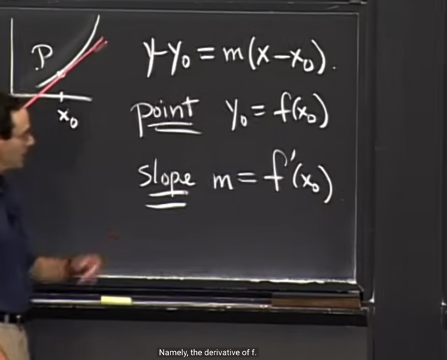
Bài 1Đạo hàm là độ dốc của tiếp tuyếnTiếp tuyến là giới hạn của cát tuyến, thương sai phân Δf/Δx, đạo hàm của 1/x và xⁿ, bài toán tam giác dưới tiếp tuyến của 1/x.1 hình tương tác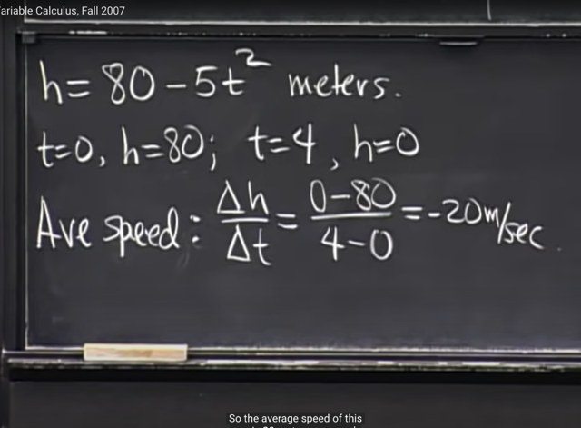
Bài 2Tốc độ thay đổi, giới hạn và liên tụcĐạo hàm là tốc độ thay đổi tức thời, giới hạn trái và phải, định nghĩa liên tục, bốn kiểu gián đoạn, và vì sao khả vi thì liên tục.1 hình tương tác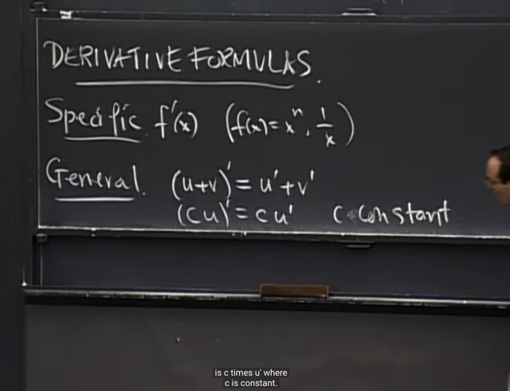
Bài 3Đạo hàm của sin, cos và quy tắc tích, thươngĐạo hàm của sin và cos, hai giới hạn sin θ/θ → 1 và (1 − cos θ)/θ → 0 chứng minh bằng hình, quy tắc tích và quy tắc thương.1 hình tương tác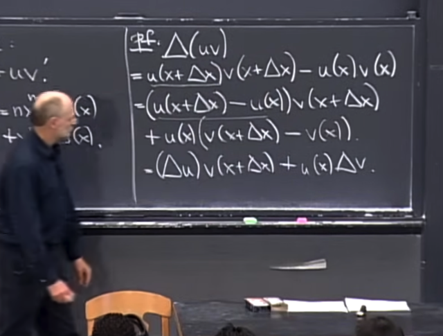
Bài 4Quy tắc dây chuyền và đạo hàm cấp caoChứng minh quy tắc tích và thương, xⁿ với n âm, quy tắc dây chuyền dy/dt = (dy/dx)(dx/dt), đạo hàm cấp cao và ký hiệu D.1 hình tương tác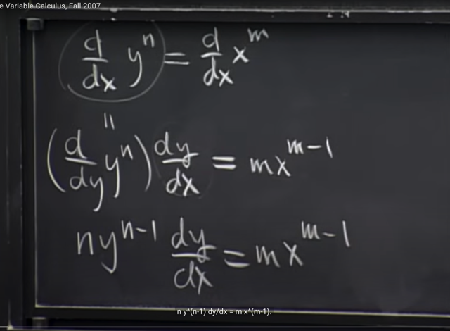
Bài 5Đạo hàm hàm ẩn và hàm ngượcLấy d/dx cả hai vế của phương trình, xᵃ với a phân số, đường tròn x² + y² = 1, đồ thị hàm ngược đối xứng qua y = x, đạo hàm của arctan và arcsin.1 hình tương tác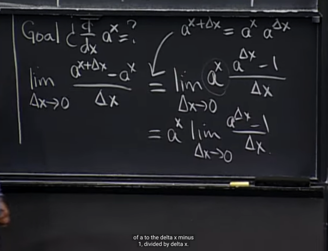
Bài 6Hàm mũ và logaritĐạo hàm của aˣ là M(a)·aˣ, định nghĩa e qua M(e) = 1, đạo hàm của ln x, lấy đạo hàm bằng logarit, xˣ và giới hạn (1 + 1/n)ⁿ = e.1 hình tương tác2Ứng dụng của đạo hàm bài 9–14
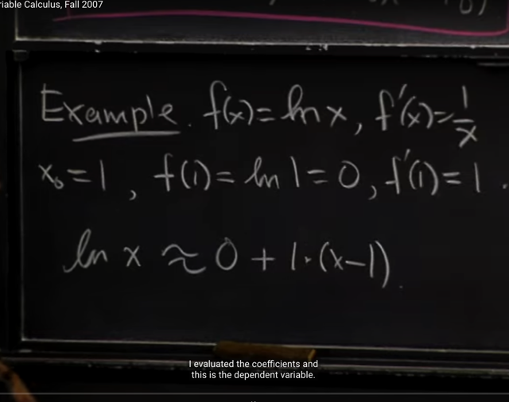
Bài 9Xấp xỉ tuyến tính và bậc haiGần x₀ đồ thị gần như trùng tiếp tuyến, f(x) ≈ f(x₀) + f′(x₀)(x − x₀); các xấp xỉ quanh 0 của sin, cos, eˣ, ln(1 + x), (1 + x)ʳ; thêm số hạng bậc hai.1 hình tương tác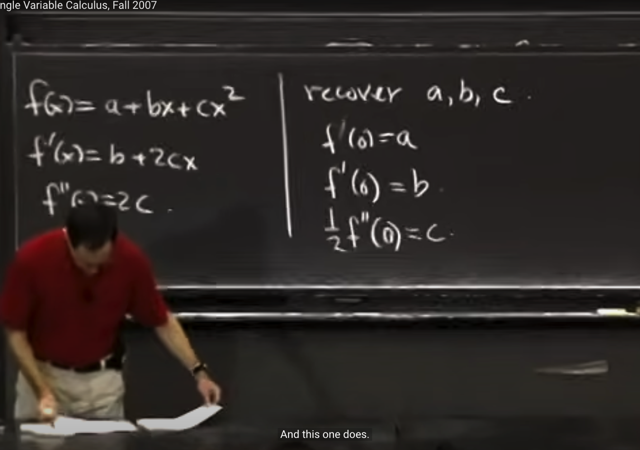
Bài 10Xấp xỉ bậc hai và vẽ đồ thịVì sao số hạng bậc hai có 1/2, tính (1 + 1/k)ᵏ bằng xấp xỉ, rồi vẽ đồ thị từ dấu của f′ và f″: tăng giảm, lõm lên lõm xuống, điểm tới hạn.1 hình tương tác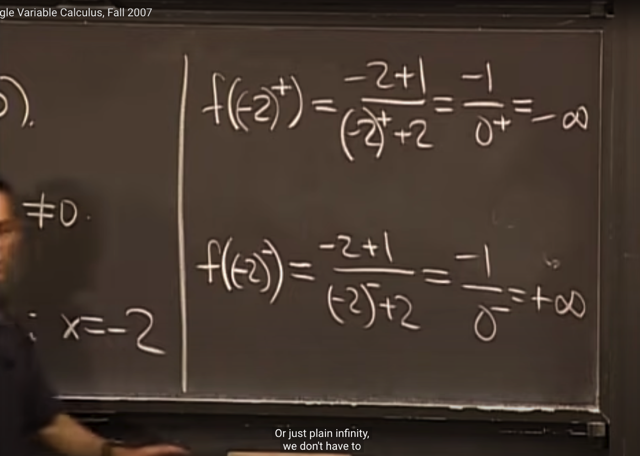
Bài 11Vẽ đồ thị: tiệm cận, điểm uốn và quy trìnhHàm không có điểm tới hạn vẫn vẽ được nhờ điểm gián đoạn và hai đầu, quy trình năm bước vẽ đồ thị, ví dụ x/ln x, và cực trị chỉ cần xét điểm tới hạn, hai đầu, chỗ gián đoạn.1 hình tương tác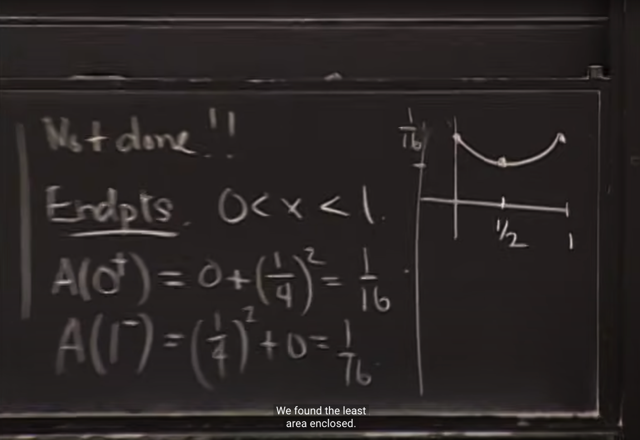
Bài 12Bài toán cực trịCắt dây làm hai hình vuông, hộp không nắp diện tích nhỏ nhất; luôn kiểm hai đầu; đáp án không thứ nguyên x/y = 2; giải lại bằng đạo hàm ẩn.1 hình tương tác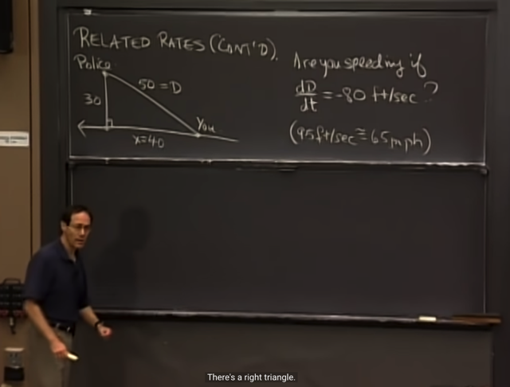
Bài 13Tốc độ biến thiên liên quan và phương pháp NewtonSúng bắn tốc độ, bể nước hình nón, quả nặng trên sợi dây (đạo hàm theo thời gian của một ràng buộc), rồi phương pháp Newton tính √5 bằng tiếp tuyến.2 hình tương tác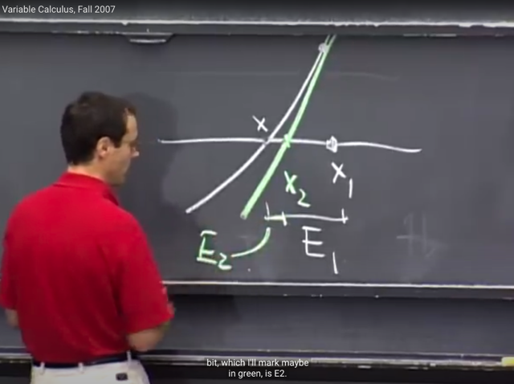
Bài 14Sai số của Newton và định lý giá trị trung bìnhVì sao sai số của Newton bình phương sau mỗi bước, ba cách Newton thất bại, định lý giá trị trung bình, hệ quả về dấu của f′, và bất đẳng thức eˣ > 1 + x + x²/2.2 hình tương tácGiải tích nhiều biến
Ghi chú khoá MIT 18.02 của Denis Auroux: vector và ma trận, đạo hàm riêng, gradient, cực trị và Lagrange, tích phân kép, trường vector và định lý Green. Bài giảng 23, 24 chưa có ghi chú.
22 bài · 18 hình tương tác
1Vector, ma trận và chuyển động bài 1–7
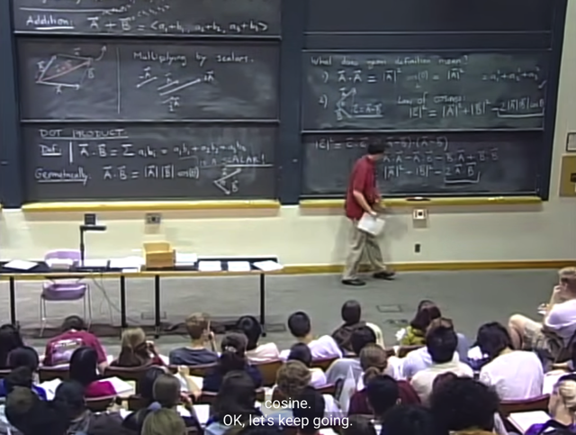
Bài 1Vector và tích vô hướngVector, độ dài, tích vô hướng A·B = |A||B|cos θ, tìm góc, kiểm tra vuông góc, thành phần của vector theo một hướng.1 hình tương tác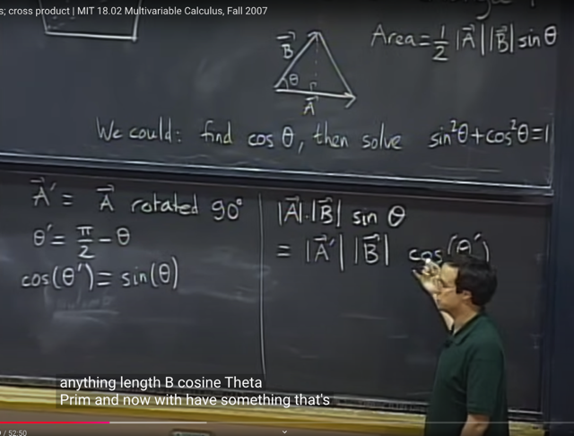
Bài 2Định thức và tích có hướngDiện tích hình bình hành là định thức, thể tích hình hộp là định thức 3 × 3, tích có hướng A × B: độ dài là diện tích, hướng vuông góc theo quy tắc bàn tay phải.1 hình tương tác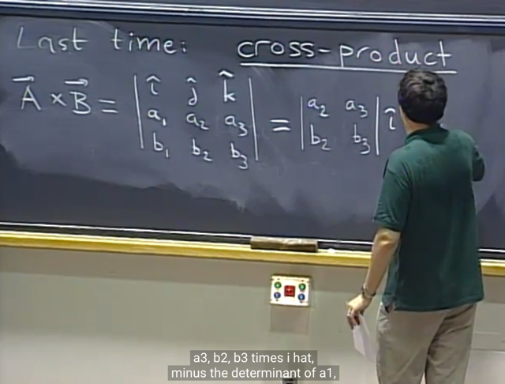
Bài 3Ma trận, ma trận nghịch đảo và mặt phẳng qua ba điểmTính chất tích có hướng, phương trình mặt phẳng qua ba điểm bằng định thức hoặc vector pháp tuyến, nhân ma trận, ma trận xoay, nghịch đảo bằng adj(A)/det(A).1 hình tương tác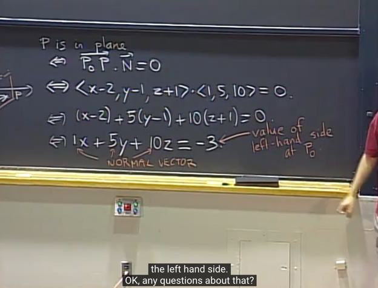
Bài 4Phương trình mặt phẳng và hệ 3 × 3Phương trình mặt phẳng ax + by + cz = d với ⟨a, b, c⟩ là vector pháp tuyến, hệ 3 × 3 là giao của ba mặt phẳng, khi nào có một nghiệm, vô nghiệm hay vô số nghiệm.1 hình tương tác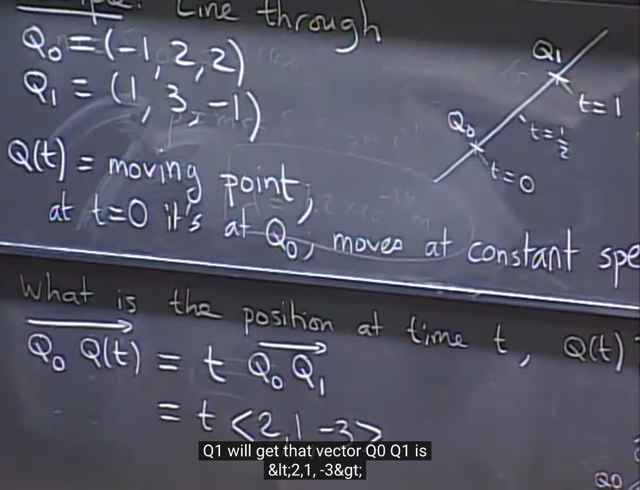
Bài 5Phương trình tham số: đường thẳng và cycloidĐường thẳng là quỹ đạo của một điểm chuyển động Q(t) = Q₀ + t·Q₀Q₁, giao với mặt phẳng, và cycloid: điểm trên vành bánh xe lăn.1 hình tương tác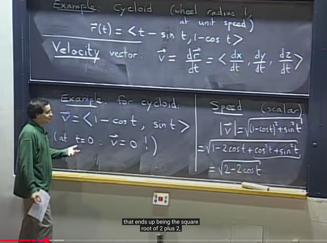
Bài 6Vận tốc, gia tốc và định luật KeplerVector vận tốc v = dr/dt, gia tốc, độ dài cung, vector tiếp tuyến đơn vị, và chứng minh định luật 2 Kepler bằng tích có hướng.1 hình tương tác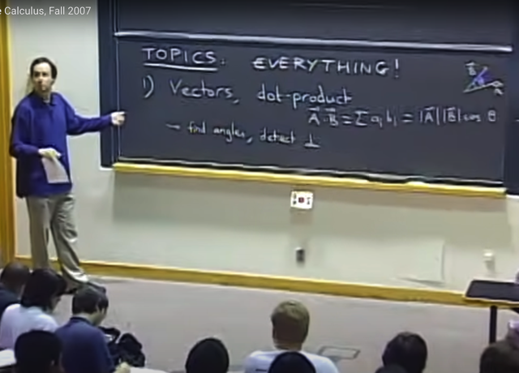
Bài 7Ôn tập: vector, ma trận, mặt phẳngÔn thi giữa kỳ 1 qua các bài của đề cũ: tìm ma trận nghịch đảo, khi nào ma trận suy biến, nghiệm của MX = 0 bằng tích có hướng, diện tích, mặt phẳng, giao điểm, đạo hàm của R·R.2Đạo hàm riêng, gradient và cực trị bài 8–15
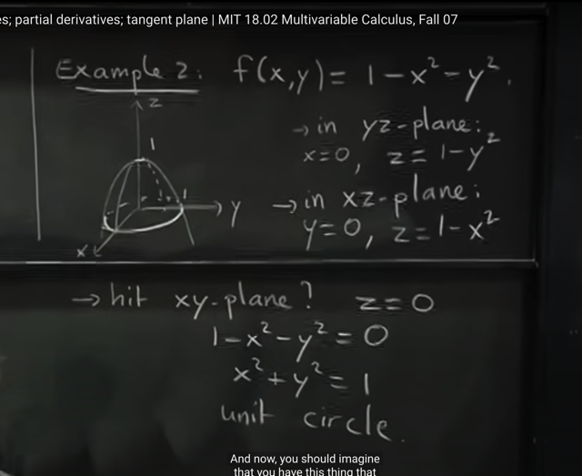
Bài 8Đồ thị, đường mức và đạo hàm riêngHàm hai biến, đồ thị z = f(x, y), đường mức và bản đồ đường mức, đạo hàm riêng ∂f/∂x là độ dốc khi cắt đồ thị bằng mặt phẳng y = hằng số.1 hình tương tác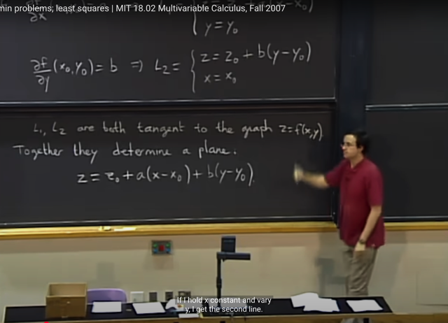
Bài 9Mặt phẳng tiếp xúc, cực trị và bình phương tối thiểuCông thức xấp xỉ Δz ≈ f_x Δx + f_y Δy và mặt phẳng tiếp xúc, điểm tới hạn, hoàn thành bình phương, và bình phương tối thiểu: khớp đường thẳng, khớp hàm mũ bằng logarit.1 hình tương tác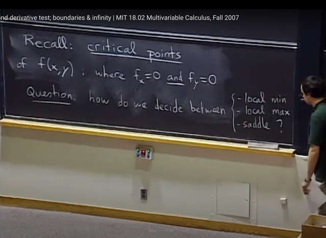
Bài 10Kiểm tra đạo hàm cấp haiPhân loại điểm tới hạn bằng hoàn thành bình phương cho ax² + bxy + cy², kiểm tra đạo hàm cấp hai AC − B², và cực trị toàn cục nằm ở biên hoặc vô cực.1 hình tương tác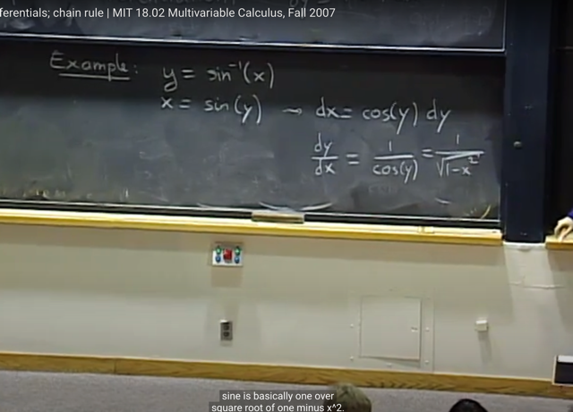
Bài 11Vi phân toàn phần và quy tắc dây chuyềnVi phân toàn phần df = f_x dx + f_y dy + f_z dz, df không phải Δf, quy tắc dây chuyền nhiều biến, chứng minh lại quy tắc tích và thương, toạ độ cực, và gradient.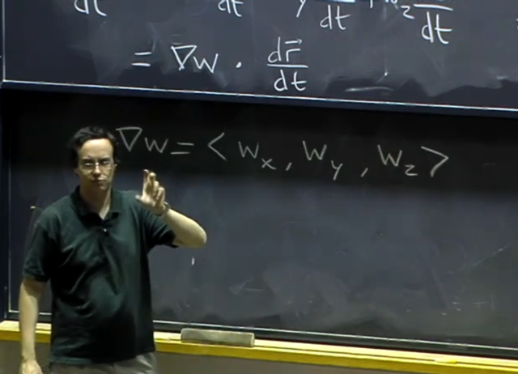
Bài 12Gradient và đạo hàm theo hướngGradient ∇w, dw/dt = ∇w · dr/dt, gradient vuông góc với mặt mức, mặt phẳng tiếp xúc của một mặt cong, đạo hàm theo hướng ∇w · û và vì sao gradient chỉ hướng tăng nhanh nhất.1 hình tương tác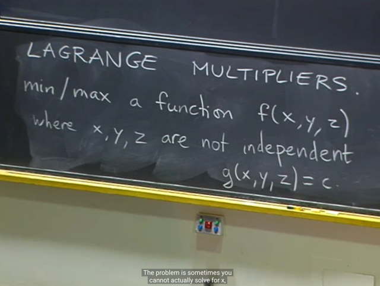
Bài 13Nhân tử LagrangeCực trị với ràng buộc g = c, điểm trên hyperbol xy = 3 gần gốc nhất, điều kiện ∇f = λ∇g, vì sao nó đúng, và bài kim tự tháp có diện tích mặt bên nhỏ nhất.1 hình tương tác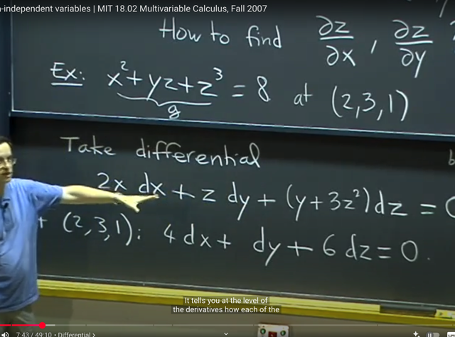
Bài 14Đạo hàm riêng khi các biến ràng buộc nhauĐạo hàm riêng khi các biến bị ràng buộc g(x, y, z) = c, lấy vi phân rồi cho dg = 0, ký hiệu (∂f/∂x)_y nói rõ giữ biến nào cố định, ví dụ diện tích tam giác vuông.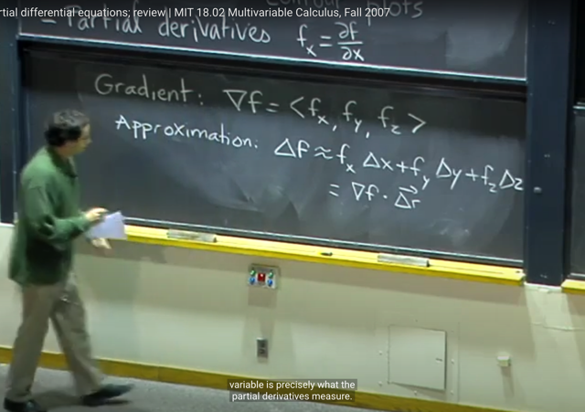
Bài 15Ôn tập: đạo hàm riêng, cực trị, ràng buộcÔn thi giữa kỳ 2: gradient và xấp xỉ, phương trình đạo hàm riêng (phương trình nhiệt), cực trị, vi phân và dây chuyền, Lagrange, đạo hàm riêng có ràng buộc, đọc bản đồ đường mức.1 hình tương tác3Tích phân kép bài 16–18
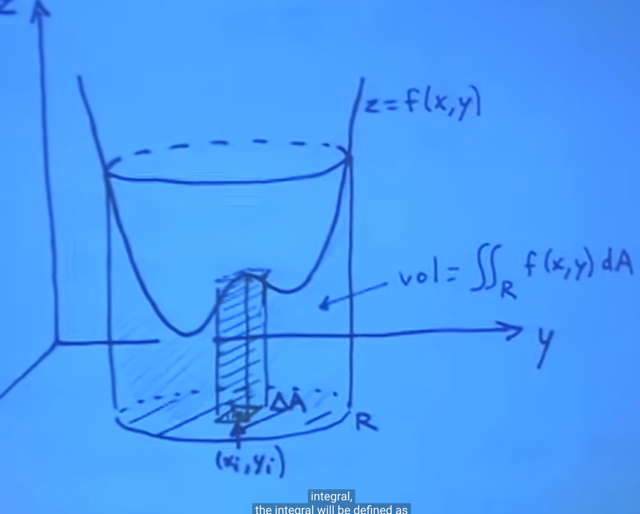
Bài 16Tích phân képTích phân kép là thể tích dưới đồ thị, định nghĩa bằng tổng Σf ΔA, tính bằng tích phân lặp (cận ngoài là số, cận trong là hàm), và đổi thứ tự tích phân để thoát chỗ bế tắc.1 hình tương tác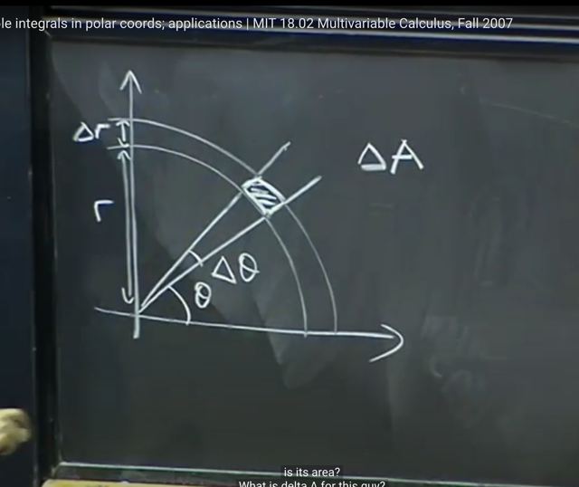
Bài 17Tích phân kép trong toạ độ cựcTích phân kép trong toạ độ cực với dA = r dr dθ, ví dụ π/8 làm lại trong ba dòng, và ứng dụng: diện tích, khối lượng, giá trị trung bình, trọng tâm, mô men quán tính.1 hình tương tác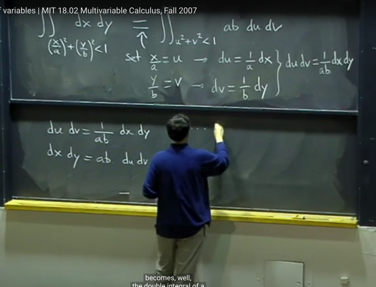
Bài 18Đổi biến trong tích phân képĐổi biến trong tích phân kép, diện tích elip, hệ số co giãn diện tích là định thức, Jacobian ∂(u, v)/∂(x, y), lại ra r dr dθ, và cách tìm cận mới.1 hình tương tác4Trường vector và định lý Green bài 19–22
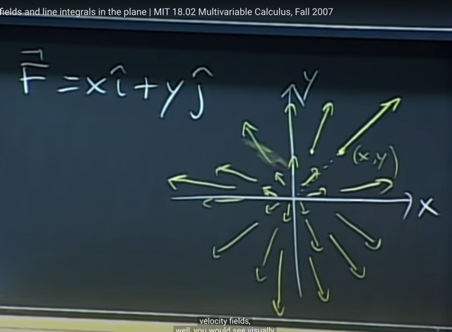
Bài 19Trường vector và tích phân đườngTrường vector F = M î + N ĵ, công của lực dọc một đường đi, tích phân đường ∫ F · dr tính bằng tham số hoá, và cách nhìn hình học F · T̂ ds.1 hình tương tác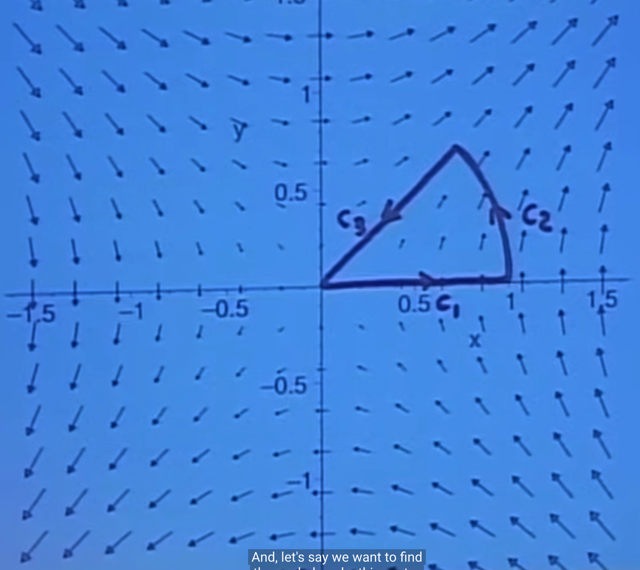
Bài 20Độc lập đường đi và trường bảo toànTính tích phân đường trên một đường kín ba đoạn, trường gradient và hàm thế, định lý cơ bản cho tích phân đường ∫∇f · dr = f(P₁) − f(P₀), độc lập đường đi, trường bảo toàn và bảo toàn năng lượng.1 hình tương tác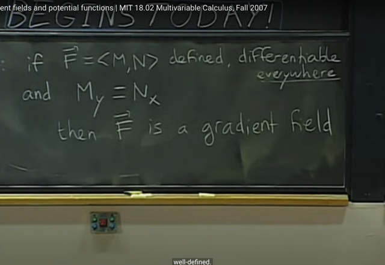
Bài 21Trường gradient, hàm thế và curlKiểm tra trường gradient bằng M_y = N_x, tìm hàm thế bằng tích phân đường hoặc bằng nguyên hàm, và curl F = N_x − M_y đo độ xoay của trường.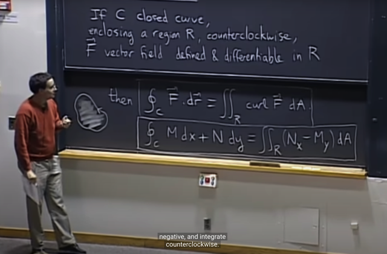
Bài 22Định lý GreenĐịnh lý Green ∮ M dx + N dy = ∬ (N_x − M_y) dA, ví dụ dùng trọng tâm để tính nhanh, curl = 0 thì bảo toàn, và chứng minh trên miền đơn giản theo chiều dọc.1 hình tương tácĐại số tuyến tính
Ghi chú khoá MIT 18.06 của Gilbert Strang: từ hệ phương trình tới bốn không gian con, phép chiếu, định thức, eigenvalue, SVD.
30 bài · 40 hình tương tác · 11 bài có video giảng lại
1Hệ phương trình và bốn không gian con bài 1–13
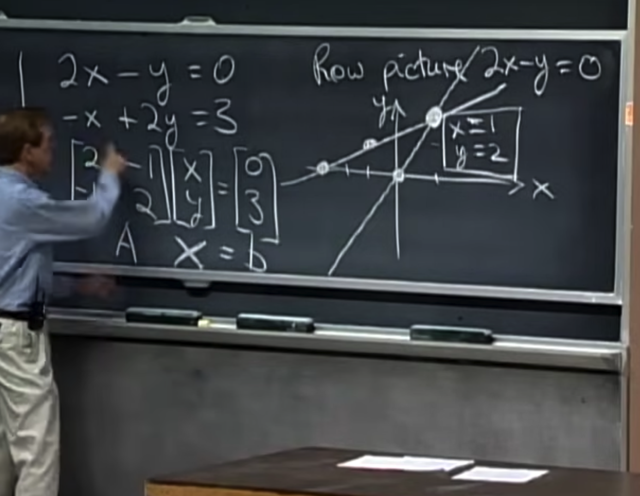
Bài 1Hình học của hệ phương trình tuyến tínhRow picture và column picture của Ax = b, tổ hợp tuyến tính các cột.▶ Có video giảng lại1 hình tương tác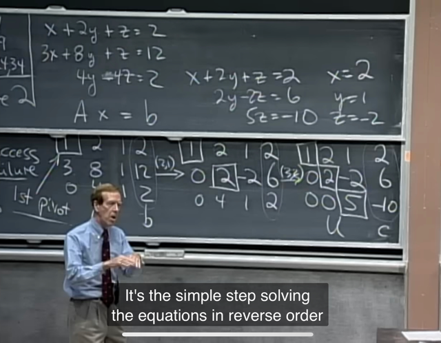
Bài 2Khử Gauss bằng ma trậnKhử Gauss, pivot, thế ngược, ma trận khử E21, E32, ma trận hoán vị và nghịch đảo của E.▶ Có video giảng lại1 hình tương tác Bài 3Nhân ma trận và ma trận nghịch đảoBốn cách nhìn phép nhân ma trận, ma trận hạng 1, khi nào có nghịch đảo và phép khử Gauss–Jordan.▶ Có video giảng lại2 hình tương tác
Bài 3Nhân ma trận và ma trận nghịch đảoBốn cách nhìn phép nhân ma trận, ma trận hạng 1, khi nào có nghịch đảo và phép khử Gauss–Jordan.▶ Có video giảng lại2 hình tương tác
 Bài 4Phân rã A = LUNghịch đảo của AB và Aᵀ, phân rã A = LU, vì sao L gọn hơn E, chi phí khử Gauss cỡ n³/3 và ma trận hoán vị.▶ Có video giảng lại2 hình tương tác
Bài 4Phân rã A = LUNghịch đảo của AB và Aᵀ, phân rã A = LU, vì sao L gọn hơn E, chi phí khử Gauss cỡ n³/3 và ma trận hoán vị.▶ Có video giảng lại2 hình tương tác
 Bài 5Chuyển vị, hoán vị và không gian vectorPA = LU, ma trận hoán vị, chuyển vị và ma trận đối xứng RᵀR, không gian vector ℝⁿ, không gian con và column space.▶ Có video giảng lại1 hình tương tác
Bài 5Chuyển vị, hoán vị và không gian vectorPA = LU, ma trận hoán vị, chuyển vị và ma trận đối xứng RᵀR, không gian vector ℝⁿ, không gian con và column space.▶ Có video giảng lại1 hình tương tác
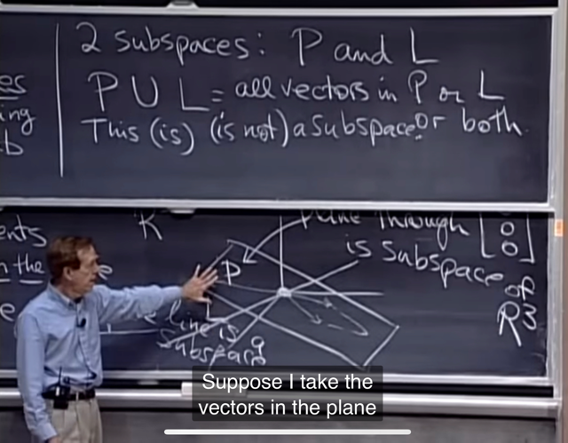
Bài 6Column space và nullspaceHợp và giao của không gian con, column space và điều kiện để Ax = b có nghiệm, nullspace là không gian con.▶ Có video giảng lại1 hình tương tác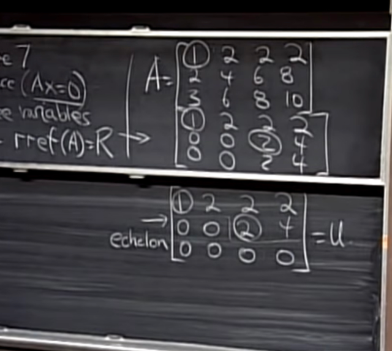
Bài 7Giải Ax = 0: pivot và nghiệm đặc biệtKhử Gauss với ma trận chữ nhật, cột pivot và cột tự do, hạng, nghiệm đặc biệt, dạng bậc thang rút gọn R = rref(A) và ma trận nullspace N.▶ Có video giảng lại2 hình tương tác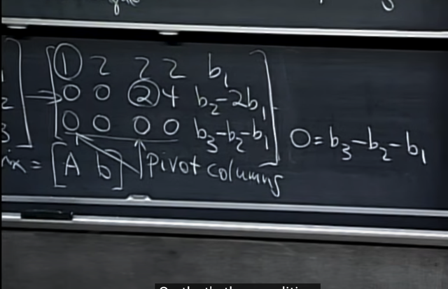
Bài 8Giải Ax = b: nghiệm tổng quát và hạngĐiều kiện có nghiệm của Ax = b, nghiệm riêng cộng nullspace, và bốn trường hợp của hạng quyết định số nghiệm.▶ Có video giảng lại3 hình tương tác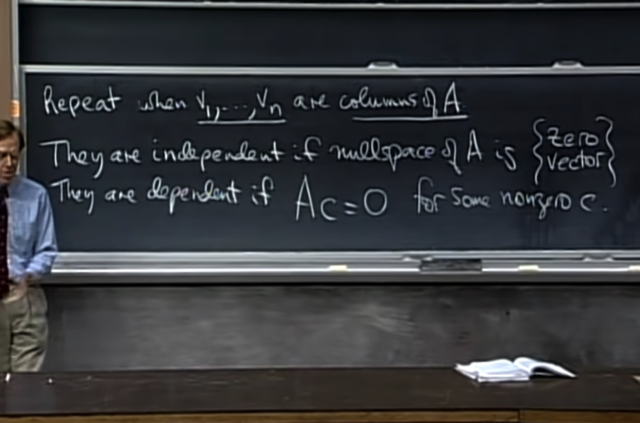
Bài 9Độc lập tuyến tính, cơ sở và chiềuVì sao Ax = 0 có nghiệm khác 0 khi m < n, độc lập tuyến tính, span, cơ sở và số chiều; hạng là số chiều của column space.▶ Có video giảng lại2 hình tương tác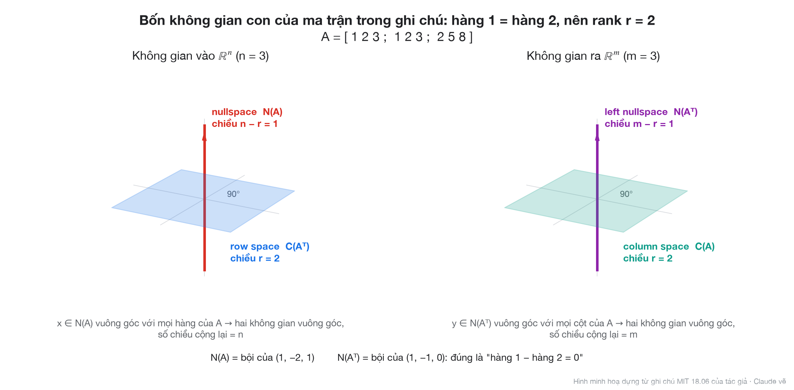
Bài 10Bốn không gian con cơ bảnColumn space, nullspace, row space và left nullspace: cơ sở và số chiều của từng cái, và cách đọc chúng từ phép khử.▶ Có video giảng lại2 hình tương tác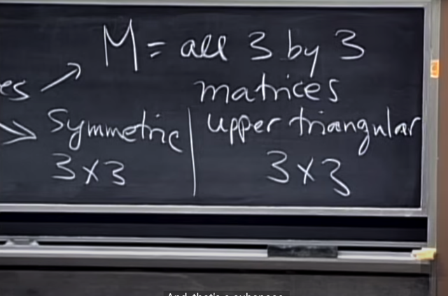
Bài 11Không gian ma trận và ma trận hạng 1Không gian vector của các ma trận, công thức số chiều dim S + dim U = dim(S ∩ U) + dim(S + U), ma trận hạng 1 A = uvᵀ và bốn không gian con của [1 1 1 1].2 hình tương tác Bài 12Đồ thị, mạng lưới và ma trận liên thuộcMa trận liên thuộc của đồ thị, điện thế và hiệu điện thế, định luật Kirchhoff là Aᵀy = 0, vòng và cây, công thức Euler từ hạng.1 hình tương tác
Bài 12Đồ thị, mạng lưới và ma trận liên thuộcMa trận liên thuộc của đồ thị, điện thế và hiệu điện thế, định luật Kirchhoff là Aᵀy = 0, vòng và cây, công thức Euler từ hạng.1 hình tương tác
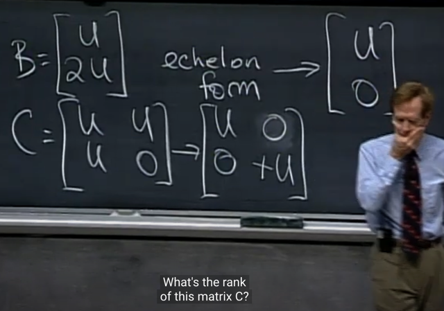
Bài 13Ôn tập giữa kỳ: tự kiểm traCác câu hỏi ôn thi giữa kỳ của Strang về không gian con, hạng, nullspace và nghiệm của Ax = b, mỗi câu có lời giải từ ghi chú để tự kiểm tra.1 hình tương tác2Trực giao, phép chiếu và định thức bài 14–20
 Bài 14Vector và không gian con trực giaoVector và không gian con vuông góc: row space vuông góc với nullspace, phần bù trực giao, và ma trận AᵀA.▶ Có video giảng lại1 hình tương tác
Bài 14Vector và không gian con trực giaoVector và không gian con vuông góc: row space vuông góc với nullspace, phần bù trực giao, và ma trận AᵀA.▶ Có video giảng lại1 hình tương tác
 Bài 15Phép chiếu lên không gian conChiếu b lên một đường thẳng, ma trận chiếu P, chiếu lên column space và phương trình chuẩn AᵀAx̂ = Aᵀb.Video đang làm1 hình tương tác
Bài 15Phép chiếu lên không gian conChiếu b lên một đường thẳng, ma trận chiếu P, chiếu lên column space và phương trình chuẩn AᵀAx̂ = Aᵀb.Video đang làm1 hình tương tác
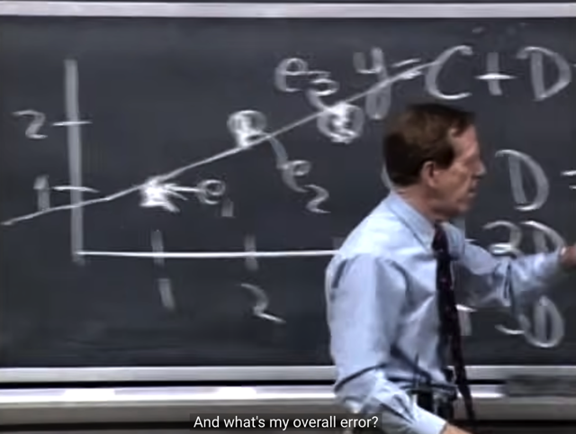
Bài 16Bình phương tối thiểuHai bức tranh của cùng bài toán, phương trình chuẩn AᵀAx̂ = Aᵀb và đường thẳng khớp nhất với ba điểm.1 hình tương tác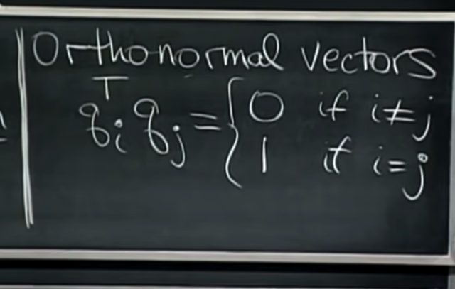
Bài 17Ma trận trực giao và Gram–SchmidtVector trực chuẩn, ma trận trực giao Q với QᵀQ = I, phép chiếu P = QQᵀ, Gram–Schmidt và A = QR.Video đang làm1 hình tương tác Bài 18Các tính chất của định thứcBa tính chất định nghĩa định thức và bảy tính chất suy ra từ chúng, det = tích các pivot, det AB = det A det B, det Aᵀ = det A.Video đang làm1 hình tương tác
Bài 18Các tính chất của định thứcBa tính chất định nghĩa định thức và bảy tính chất suy ra từ chúng, det = tích các pivot, det AB = det A det B, det Aᵀ = det A.Video đang làm1 hình tương tác
 Bài 19Công thức định thức và cofactorCông thức lớn n! số hạng, cofactor và khai triển theo hàng, ma trận ba đường chéo.Video đang làm1 hình tương tác
Bài 19Công thức định thức và cofactorCông thức lớn n! số hạng, cofactor và khai triển theo hàng, ma trận ba đường chéo.Video đang làm1 hình tương tác
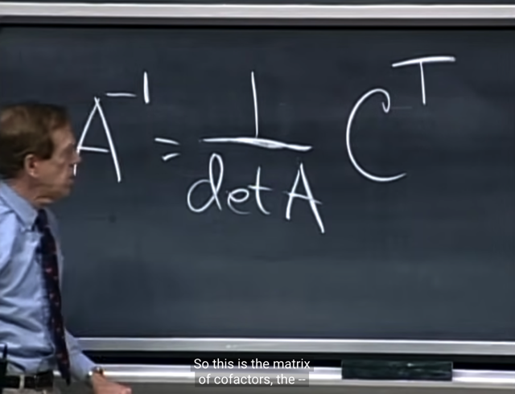
Bài 20Quy tắc Cramer, ma trận nghịch đảo và thể tíchCông thức A⁻¹ = Cᵀ/det A, quy tắc Cramer và định thức là thể tích của hình hộp.Video đang làm2 hình tương tác3Eigenvalue và eigenvector bài 21–25
 Bài 21Eigenvalue và eigenvectorAx = λx, phương trình đặc trưng det(A − λI) = 0, vết và định thức, ma trận xoay có λ phức, λ lặp mà thiếu eigenvector.1 hình tương tác
Bài 21Eigenvalue và eigenvectorAx = λx, phương trình đặc trưng det(A − λI) = 0, vết và định thức, ma trận xoay có λ phức, λ lặp mà thiếu eigenvector.1 hình tương tác
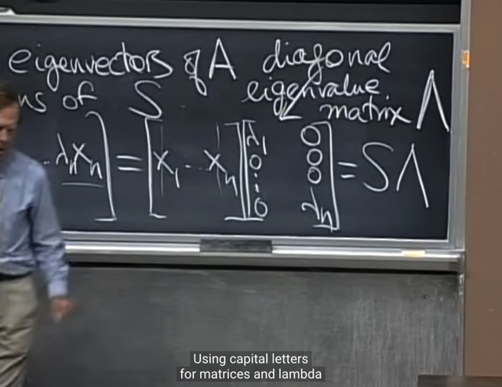
Bài 22Chéo hoá và lũy thừa của AA = SΛS⁻¹, Aᵏ = SΛᵏS⁻¹, khi nào chéo hoá được, phương trình sai phân uₖ₊₁ = Auₖ và số Fibonacci thứ 100.1 hình tương tác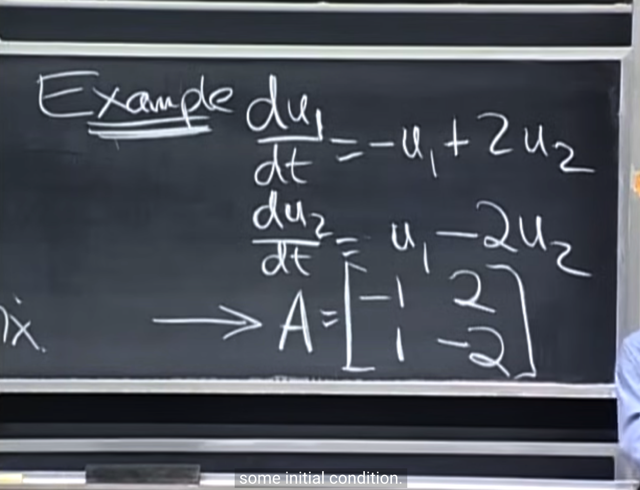
Bài 23Phương trình vi phân và eᴬᵗGiải du/dt = Au bằng eigenvalue; ổn định, trạng thái dừng hay nổ tung; ma trận mũ eᴬᵗ; đưa phương trình bậc hai về hệ bậc một.1 hình tương tác Bài 24Ma trận Markov và chuỗi FourierMa trận Markov luôn có λ = 1 và trạng thái dừng, bài toán di cư California–Massachusetts, chiếu lên cơ sở trực chuẩn và chuỗi Fourier.2 hình tương tác
Bài 24Ma trận Markov và chuỗi FourierMa trận Markov luôn có λ = 1 và trạng thái dừng, bài toán di cư California–Massachusetts, chiếu lên cơ sở trực chuẩn và chuỗi Fourier.2 hình tương tác
 Bài 25Ma trận đối xứng và xác định dươngMa trận đối xứng có λ thực và eigenvector vuông góc, A = QΛQᵀ, định lý phổ, dấu pivot = dấu λ, ma trận xác định dương.1 hình tương tác
Bài 25Ma trận đối xứng và xác định dươngMa trận đối xứng có λ thực và eigenvector vuông góc, A = QΛQᵀ, định lý phổ, dấu pivot = dấu λ, ma trận xác định dương.1 hình tương tác4Xác định dương, SVD và biến đổi tuyến tính bài 26–30
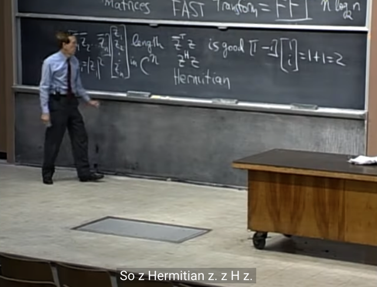
Bài 26Ma trận phức và biến đổi Fourier nhanhĐộ dài và tích vô hướng của vector phức, ma trận Hermitian và unitary, ma trận Fourier Fₙ, và vì sao FFT chỉ cần cỡ ½n log₂n phép nhân.1 hình tương tác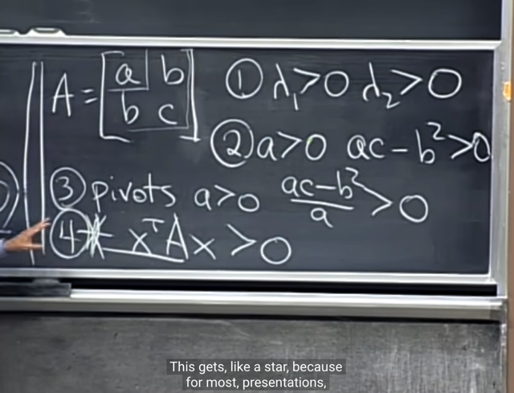
Bài 27Ma trận xác định dương và cực tiểuBốn phép thử xác định dương, dạng toàn phương xᵀAx, cái tô và yên ngựa, hoàn thành bình phương chính là khử Gauss, và elipxoit xᵀAx = 1.1 hình tương tác Bài 28Ma trận đồng dạng và dạng JordanAᵀA xác định dương khi các cột độc lập, ma trận đồng dạng B = M⁻¹AM có cùng eigenvalue, và dạng Jordan khi thiếu eigenvector.1 hình tương tác Bài 29Phân tích giá trị suy biến (SVD)A = UΣVᵀ cho mọi ma trận, tìm V và Σ từ AᵀA, U từ AAᵀ, ví dụ hạng 2 và hạng 1, và SVD là chọn cơ sở cho bốn không gian con.1 hình tương tác Bài 30Phép biến đổi tuyến tính và ma trận của nóT(cv + dw) = cT(v) + dT(w), phép quay, chiếu và Av + b, toạ độ đến từ cơ sở, cách dựng ma trận của T theo cơ sở đầu vào và đầu ra, và đạo hàm như một ma trận.1 hình tương tácXác suất
Ghi chú khoá Stat 110 của Joe Blitzstein (Harvard): đếm, điều kiện hoá, biến ngẫu nhiên và các phân phối, kỳ vọng có điều kiện, luật số lớn và định lý giới hạn trung tâm. Video Stat 110 không có giấy phép mở nên các bài không dùng ảnh chụp bài giảng; mọi hình là hình tương tác, ảnh bìa cũng chụp từ hình tương tác đó.
30 bài · 30 hình tương tác
1Đếm và điều kiện hoá bài 1–7
2Biến ngẫu nhiên rời rạc và liên tục bài 8–15
3Hàm sinh moment và phân phối đồng thời bài 16–22
4Beta, Gamma, kỳ vọng có điều kiện và các định lý giới hạn bài 23–30
Học máy
Ghi chú sách Pattern Recognition and Machine Learning của Christopher Bishop, mỗi bài một mục của sách. Sách có bản quyền nên bài không dùng ảnh trang sách: hình là hình tương tác, ảnh bìa chụp từ hình đó; video ngắn là bài giảng lại của tác giả.
30 bài · 40 hình tương tác · 16 bài có video giảng lại
1Chương 1 · Mở đầu bài 1–6
2Chương 2 · Các phân phối xác suất bài 7–13
3Chương 3 · Mô hình tuyến tính cho hồi quy bài 14–18
4Chương 4 · Mô hình tuyến tính cho phân loại bài 19–23
5Chương 5 · Mạng nơ-ron bài 24–28
6Phụ lục bài 29–30
Tối ưu số
Ghi chú sách Numerical Optimization của Jorge Nocedal và Stephen Wright, mỗi bài một mục của sách. Sách có bản quyền nên bài không dùng ảnh trang sách: hình là hình tương tác (nhiều hình chạy thẳng thuật toán để thấy đường đi và tốc độ hội tụ); video ngắn là bài giảng lại của tác giả.
30 bài · 37 hình tương tác · 6 bài có video giảng lại